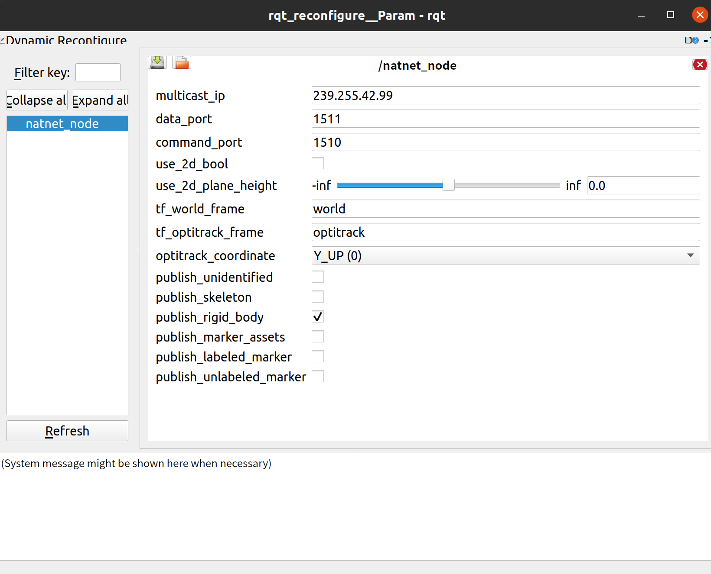

Welcome to natnet_bridge’s documentation!¶
Project Structure¶
Project
|---natnet_bridg\
| | src\
| | include\
| | ...\
|--optitrack_bridge\
|---reference
| | CATKIN_IGNORE # This is to ignore the packages in this folder
| | optitrack_bridge\
| | natnet_sdk\
| | NatNetSDKCrossplatform-master\ # this is Linux version of NatNetSDK 'Packet Client example' in github
| | mocap_optitrack-master\ # widely used third party Optitrack-ROS bridge
| | PacketClient\ # windows SDK
| | PythonClient\ # windows SDK
|---docs\
|---...
Quick start for natnet_bridge¶
Clone the repo into ROS_Workspace, and run $ catkin_make.
- 1. Configuring Motive
Open the Data Streaming Pane in Motive by clicking on
View->Data Streaming. click on the 3 dots in the right upper corner, then clickShow Advanced. setTypein Advanced Network Settings toMulticast, specify (command and data) port`(default is 1510 and 1511) if necessary and set the ``Multicast Interface` (default: 239.255.42.99)- 2. Configuring natnet_bridge
Configuring the multicast IP address/data port/command port, iteratively run following commands
$ roscd natnet_bridge/config $ vim parameter.yaml
If you want to use 2d information, specify the
use_2d_boolanduse_2d_plane_height. If you want to additionally get information like unidentified markers, change corresponding parameterpublish_xxxas true.It could also be configured later via
dynamic_reconfigure.Note
make sure that the Motive coordinate setting in both Motive-side and Ros-Side(
parameter: optitrack_coordinate) are the same. Otherwise it will be wrong.- 3. Run natnet_bridge
Run the command:
$ roslaunch natnet_bridge natnet_bridge.launch
If you want to show complete information like ROS_DEBUG information, you can run
$ roslaunch natnet_bridge natnet_bridge.launch show_debug_info:=true
Otherwise it is also possible to run following command via running:
$ rosconsole set /natnet_node ros.natnet_bridge debug
You can also change the configuration while running via, it would convenient when you need to change the settings while running.:
$ roslaunch natnet_bridge natnet_bridge.launch launch_reconfigure:=true

Comparison with prior optitrack_bridge¶
More stable for running logic.
Fixed bugs of optitrack_bridge.
Non-Blocking. Saving cpu resources.
More completely parsing information of NatNet
Controllable loop rate…
Time information
Get server version and natnet version from the motive serve
Friendly parameter setting, friendly information print out…